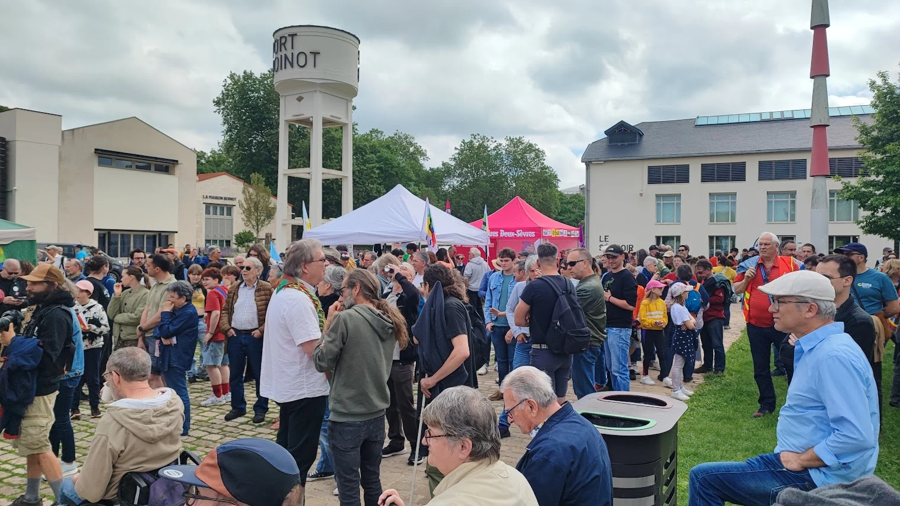

Compte rendu fédéral
De 1936 au 1er Mai 2026, les conquêtes sociales se défendent
Date indiquée par Facebook · 1 mai 2026
Repères éditoriaux
Au rassemblement du 1er Mai à Niort, nous avons rappelé ce que les grèves et le Front populaire ont conquis en 1936, des congés payés aux quarante heures et aux conventions collectives. Nous étions là pour défendre et étendre ces droits, et pour faire vivre la solidarité et la fraternité.
Texte conservé avec la publication
1936 – 1er mai 2026
Il y a quatre-vingt dix ans, suite à la mobilisation sociale avec occupations d’usines, suivie de la victoire du Front populaire, la France s’est dotée des congés payés, d’un temps de travail abaissé à quarante heures par semaine, de conventions collectives protectrices pour les salariés. Ces mesures, qui peuvent paraitre évidentes aujourd’hui, furent une révolution à l’époque. Pour la première fois, le temps libéré, le droit au repos, l’accès aux loisirs entraient dans la vie des classes populaires. Ce fut un conquis social qui profite encore à toute la société, bien que des droits soient sans cesse remis en cause, telle la journée du 1er mai, journée internationale de lutte pour le droit des travailleurs. C’est le seul jour férié social, chômé, payé et revendicatif.
Quatre-vingt dix ans plus tard, les inégalités explosent toujours davantage, le travail se précarise, les services publics sont affaiblis par des décennies de politiques libérales et le pouvoir de la finance s’impose trop souvent au détriment de l’intérêt général.
Cela doit nous rappeler que les avancées sociales ne sont jamais offertes, rien ne se conquiert sans mobilisation populaire.
A l’heure où certains rêvent d’effacer les conquêtes sociales, notre devoir est de les défendre et de les étendre. A l’heure où le fatalisme gagne du terrain, que l’extrême droite menace, il est utile de rappeler que l’histoire n’est pas écrite d’avance. En 1936, beaucoup affirmaient que c’était impossible, le peuple de France a prouvé le contraire.
Ceux qui étaient rassemblés à Niort aujourd’hui 1er mai, comme dans beaucoup d’autres villes en France, étaient là pour dire que l’on peut opposer la solidarité à la haine, la fraternité à la division et l’idéal républicain et social au repli nationaliste.
Justice sociale, égalité, fraternité, ne sont pas des mots vides de sens, à nous de les faire vivre par nos luttes.

Sources
Archive rouge · export Facebook · AR-0002-FB-00792
À lire aussi · À Niort, nous avons porté nos revendications du 1er Mai